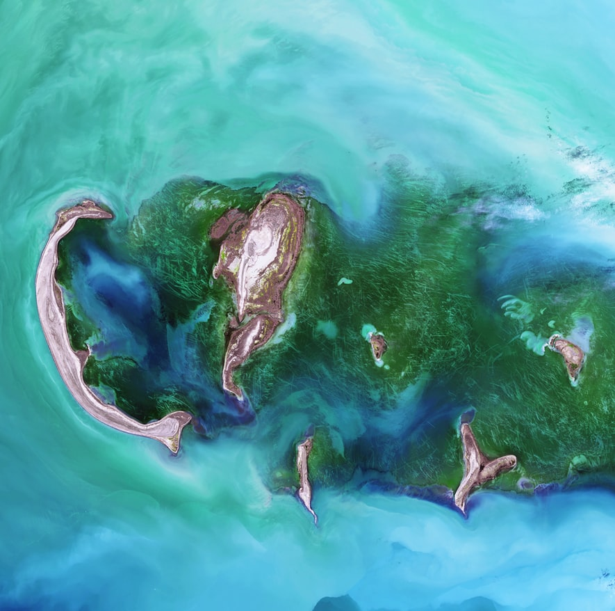

Restaurant Management
Effective restaurant management involves several challenges, such as public relations, inventory, staff, and customer service. ... Either way, a strong manager is an essential component of a successful restaurant—they are usually the person who handles both staff and customer issues.
- Spa
A spa(Sanus per Aquam) is a location where mineral-rich spring water (and sometimes seawater) is used to give medicinal baths. Spa towns or spa resorts (including hot springs resorts) typically offer various health treatments, which are also known as balneotherapy.

- Pool
Pooling is a resource management term that refers to the grouping together of resources for the purposes of maximizing advantage and/or minimizing risk to the users.

- Front exterior
A doorway that allows entrance to or exit from a building.

- Rooms
In a building, a room is any space enclosed within a number of walls to which entry is possible only by a door or other dividing structure that connects it either to a passageway, to another room, or to the outdoors, that is large enough for several persons to move about, and whose size, fixtures, furnishings, and sometimes placement within the building support the activity to be conducted in it.

- Bookings
Booking is an act of reserving an accommodation, a table, a seat, a flight, a trip etc. ... in advance. A Booking can have different conditions like: payments upon arrival, cash payment, non-refundable, etc. Mostly used for services provided in the travel and hospitality industry.

Tourism Services
Tourism industry is important for the benefits it brings and due to its role as a commercial activity that creates demand and growth for many more industries. Tourism not only contributes towards more economic activities but also generates more employment, revenues and play a significant role in development.
- Connections with other companies
Business relations are connections between stakeholders in the process of businesses, such as employer–employee relationships, managers as well as outsourced business partners. ... The more communication and interaction there is between two entities, the stronger the business relationship builds.

- Travel talk
Travel Talk is a customer-oriented specialist tour operator. ... Together with our customer-oriented approach, Travel Talk's ultimate goal is to deliver the value back to our guests and share experiences of a lifetime without breaking the bank.

- Community Travels eg Kibera walk
Community based tourism is tourism in which local residents (often rural, poor and economically marginalised) invite tourists to visit their communities with the provision of overnight accommodation. ... At least part of the tourist income is set aside for projects which provide benefits to the community as a whole.
Community based tourism affords the inhabitants of the region to become tour guides and provide services to visitors. It also provides communities with an opportunity to play a role in generating movement in the elements of production and exchange of goods and services in a given region.